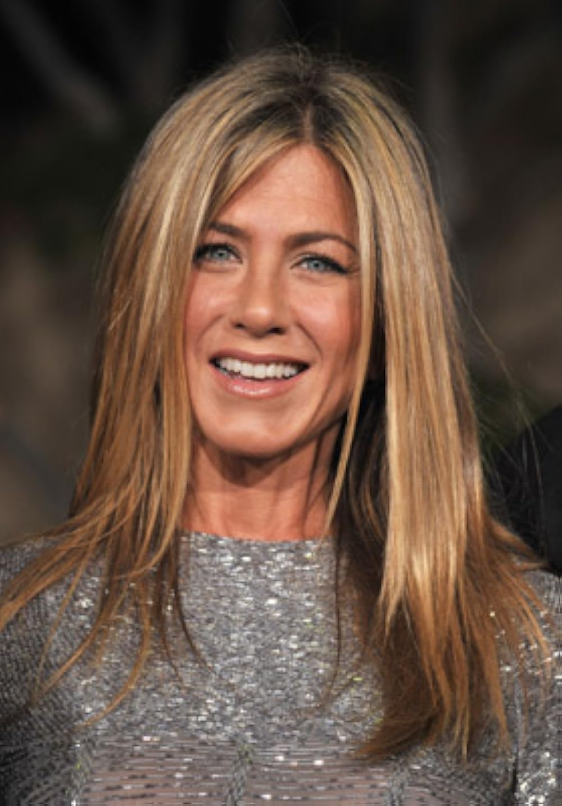
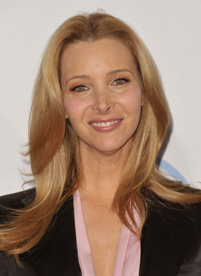

Elenco:
Rachel Green interpretada por:
jennifer Aniston
Phoebe Buffay-Hannigan interpretada por:
Lisa Kudrow
Ross Geller interpretado por:
David Schwimmer
Chandler Bing interpretado por:

Matthew Perry
Monica Geller interpretada por:

Courteney Cox
Joey Tribbiani interpretado por:
Matt LeBlanc
Un poco sobre sus personajes:
Rachel Green
Al principio, Rachel es una joven mimada que deja plantado a su prometido en el altar y se une al grupo de amigos. Su evolución personal pasar de ser una dependiente sin experiencia laboral a convertirse en una exitosa ejecutiva de moda, es uno de los arcos principales de la serie. Su relación con Ross es uno de los pilares de la trama.
Phoebe Buffay
Excéntrica y creativa, Phoebe es la "espíritu libre" del grupo. Con una vida difícil en el pasado, aporta una perspectiva única y momentos de humor surrealista. A lo largo de la serie, también muestra un lado muy maduro y empático.
Ross Geller
Paleontólogo inteligente pero socialmente torpe, Ross es el hermano mayor de Monica. A lo largo de la serie, su relación intermitente con Rachel genera muchos de los momentos más memorables. También se enfrenta a divorcios, paternidad y varios cambios en su vida amorosa y profesional.
Chandler Bing
Con su humor sarcástico e ingenioso, Chandler es el bromista del grupo. Bajo su fachada cómica, lucha con problemas de autoestima y familia. Su inesperado romance y matrimonio con Monica le dan profundidad a su personaje.
Monica Geller
La chef perfeccionista y obsesiva del grupo, Monica es la "madre" de la pandilla, siempre preocupada por sus amigos. Su búsqueda del amor, sus inseguridades y su posterior relación con Chandler forman una parte crucial del desarrollo de la serie.
Joey Tribbiani
Actor de poca fortuna y gran corazón, Joey es el amigo leal pero algo ingenuo. Su amor por la comida, su carrera de actor y su amistad cercana con Chandler ofrecen algunos de los momentos más cómicos y entrañables de la serie.

Temporadas y Episodios
- Temporada(1994–1995)
- Resumen: Introducción de los personajes, su amistad y los primeros conflictos románticos, especialmente entre Ross y Rachel.
- Episodios: 24
- Temporada(1995–1996)
- Resumen: Se desarrollan nuevas relaciones amorosas; Ross comienza una relación con Julie, mientras Rachel lidia con sus sentimientos.
- Episodios: 24
- Temporada(1996–1997)
- Resumen: El romance entre Ross y Rachel florece, pero también enfrenta graves desafíos, llevando a su primera ruptura importante.
- 25
- Temporada(1997–1998)
- Resumen: El grupo viaja a Londres para la boda de Ross, que termina en un desastre amoroso. Monica y Chandler comienzan su relación en secreto.
- Episodios: 24
- Temporada(1998–1999)
- 24
- Resumen: Monica y Chandler ocultan su relación al grupo mientras exploran su romance. El divorcio de Ross tras su fallida boda en Londres.
- Temporada (1999–2000)
- Resumen: Monica y Chandler consolidan su relación, mientras Ross y Rachel enfrentan las consecuencias de un matrimonio accidental en Las Vegas.
- Episodios: 25
- Temporada (2000–2001)
- Resumen: Monica y Chandler planean su boda, varios cambios de vida importantes se avecinan para todo el grupo.
- Episodios: 24
- Temporada (2001–2002)
- Resumen: Rachel queda embarazada, revelándose que Ross es el padre, sus sentimientos resurgen en medio de la llegada de su hija, Emma.
- Episodios: 24
- Temporada (2002–2003)
- Resumen: Ross y Rachel navegan su nueva vida como padres solteros, mientras Monica y Chandler enfrentan problemas de fertilidad.
- Episodios: 24
- Ultima Temporada(2003–2004)
- Resumen: La temporada final muestra cambios drásticos: Monica y Chandler se convierten en padres adoptivos, Ross y Rachel reconsideran su futuro juntos, y el grupo enfrenta el fin de una era al dejar sus antiguos apartamentos y comenzar nuevas vidas.
- Episodios: 18